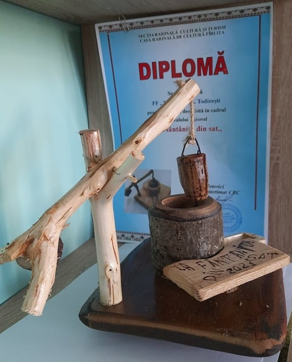

Despre noi
Satul Todirești, este o localitate în care valorile culturale, tradițiile, au fost adânc insuflate de strămoși.
Suntem plini de dragoste și dor față de datinile localității, acest fapt este demonstrat prin numeroasele participări a ansamblului vocal Tudorițele, sau ceata de urători a Casei de cultură Todirești, atât la concursurile naționale, internaționale, cât și viziltele la emisiunile postului TV Moldova1 precum: „La noi în sat”, ,,Aprindeți luminile”, ,,Cine vine la noi”, ,,Rapsodia satului”, ,,Tezaur folcloric”, ,,Pascala-2019”. Am fost gazda Festivalului ,,Lume lume hai la glume” ed.IX, am participat la Tîrgul Creator Popular ed.XXV - Sibiu Romînia; Festival Republican ,,Regina Dulce” – Drochia; Târgul de Crăciun – Chișinău, TV-Moldova 1, șamd.
Un alt proiect realizat recent a avut genericul „Veșnicia s-a născut la sat”.
Respectivul proiect este parte integrantă din valoarea culturii pusă în slujba omului și a nevoilor
sale întru bunăstarea întregii comunități, ne spun inițiatorii.
„Însăși ideea de proiect a venit acum trei ani, promovând tinerile talente, tradițiile noastre
strămoșești și culegând folclor din sat, la un pahar de vorbă cu oameni mai înțelepți, mai
deosebiți, mai de demult și mai de departe”, a declarat Viorica Culeac, directoarea Casei de Cultură
Todirești.
De menționat că Casa de cultură Todirești a răspuns la apelul Ministerului Sănătății, Muncii și
Protecției Sociale de a participa la concursul republican „Pentru o viață activă la orice vârstă”.
Organizat pentru prima dată, acest concurs dă șansa mai multor primării din țară de a-și putea
expune un video reprezentativ localității. Rezultatele concursului vor fi făcute publice după 21
septembrie